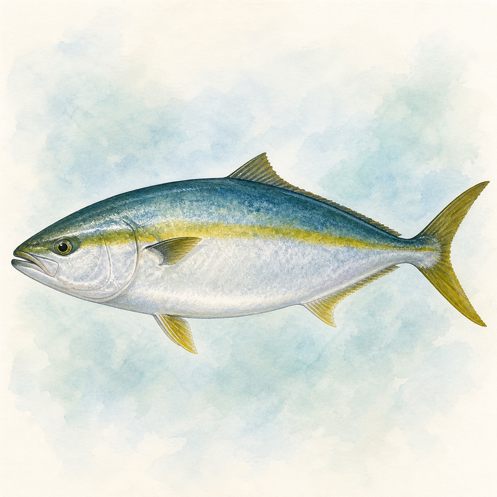

ワラサ
ワラサ
0〜15匹
45〜85cm
今週 42便・26船宿
トップ › ワラサ
★ 今週実績あり（4魚種）
★ 今週実績あり（15エリア）
| 1月 | 2月 | 3月 | 4月 | 5月 | 6月 | 7月 | 8月 | 9月 | 10月 | 11月 | 12月 | |
|---|---|---|---|---|---|---|---|---|---|---|---|---|
| 数釣 | ||||||||||||
| 型釣 |
※ 過去3年の関東船釣り釣果データより集計（2023〜2025年）
船釣り全般の Q&A（服装・船酔い・予約・ライフジャケット等）はよくある質問ページにまとめています。
関東ワラサ船釣りの釣果は5月・10月に実績が集中しています。4月・8〜9月・11月も狙える時期です。
関東ワラサ船釣りの主なエリアは松輪江奈港（310便）、鹿島港（205便）、松輪間口港（107便）です。
関東ワラサ船釣りの一日の釣果は1〜6匹が標準的なレンジです。最高実績は73匹です。
難易度は中級者向けの釣りです。ブリの若魚で引きが豪快。体力勝負になる場面もあり、タックルはある程度しっかりしたものが必要です。関東では60船宿が出船実績あり。多くの船宿でレンタルタックルや仕掛けの購入が可能です。
